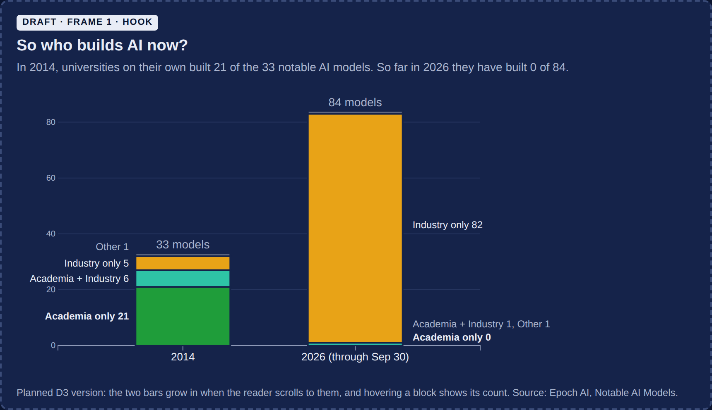

Frame 1
In 2014, universities built most of the notable AI models. In 2026, they built none.
In 2014, universities working on their own built 21 of the 33 most notable AI models. So far in 2026 they have built 0 of 84.
Design draftPK Praneel

Planned D3 view: two stacked bars, 2014 and 2026, split by sector. The bars grow in as you arrive and hovering a block shows its count.
So who builds AI now?